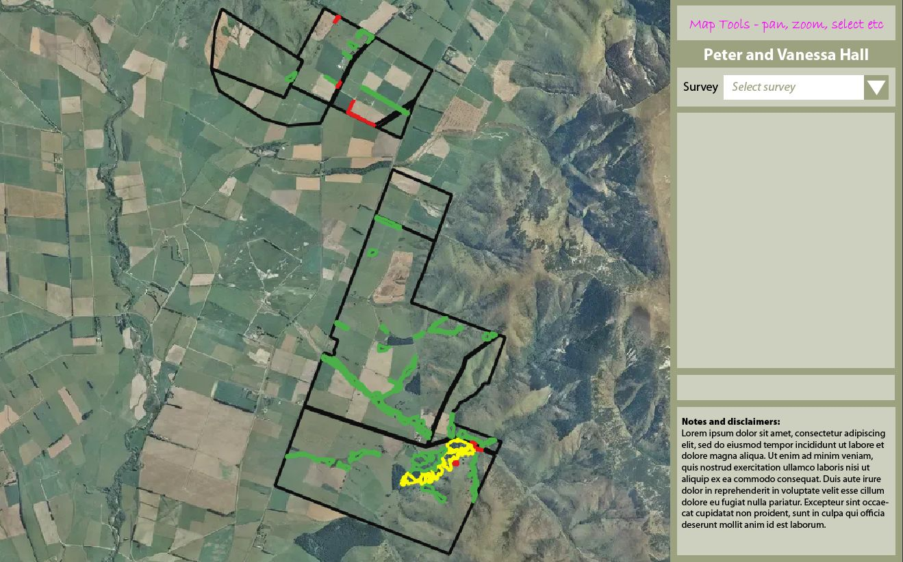

<div class="container">
    <div class="row topspace">
        <article class="col-sm-8 maincontent">
            <div class="your-class">
                <div></div>
                <div></div>
                <div></div>
                <div></div>
                <div></div>
                <div></div>
                <div></div>
            </div>
            <br>
            <p>In 2022, I won this project in my freelance career to build a map based GIS solution for farmers, which
                would allow farmers to add up their information / data about their surveys of the field spatially.</p>
            <br>
            <p>Rather than going through hectic manual process or including or excluding the fields, farmers would be
                able to do the same over a spatial map served on a web gis solution on the fly with only a few clicks of
                the mouse. A spatial database was designed to handle the requests of the farmers alongwith their own non
                spatial information embedded into the system.</p>
            <br>
            <p>This was a freelance project that I won over Upwork as a freelancer and developed the portal from scratch
                to top & deployed it over AWS servers.</p>
        </article>
        <aside class="col-md-4 sidebar sidebar-left">
            <div class="widget">
                <ul class="list-group">
                    <li class="list-group-item pull-left">
                        <h4 class="custom-subsubheader">Freelance Project</h4>
                        <p><strong>2022</strong></p>
                        <p>Website (Login protected): <a href="https://silverfernfarmer.co.nz/"
                                target="_blank">View</a></p>
                    </li>
                </ul>
            </div>
        </aside>
    </div>
</div>